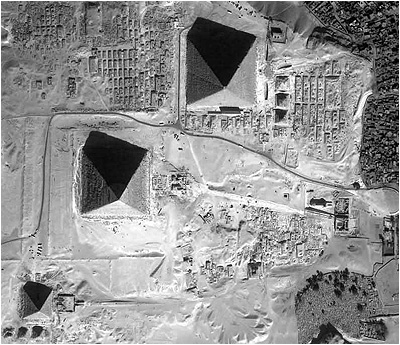
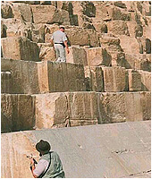
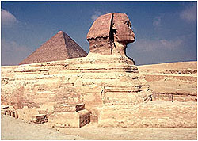
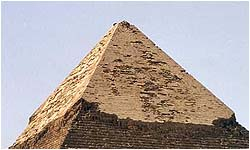
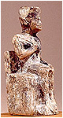
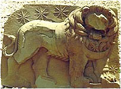
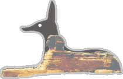
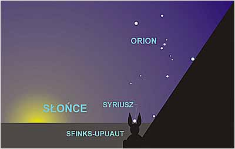
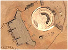
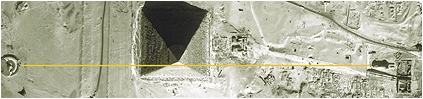

|
Tylko trzy piramidy wzbudza³y i nadal wzbudzaj± podziw od zarania naszej cywilizacji.
Ten wielki kompleks budowlany, majstersztyk kamieniarski staro¿ytnych znajduje siê
w Giza tu¿ obok Kairu w dzisiejszym Egipcie lub jak sami siê nazwali, w Zjednoczonej
Republice Arabskiej. Niew±tpliwie ogl±dano je od najdawniejszych czasów, ale dopiero
s³owo pisane zostawi³o najstarszy i najtrwalszy ¶lad tych oglêdzin. Staro¿ytni nie
tylko wyra¿ali swój zachwyt i podziw, ale tak¿e przekazali wiadomo¶ci (prawdziwe,
zas³yszane lub zmy¶lone) nam potomnym. My za¶ niektóre przyjmujemy za "dobr± monetê"
w zale¿no¶ci od subiektywnego odczucia. Opieramy siê przy tym tylko na istniej±cych
dokumentach. O ilo¶ci dokumentów opiewaj±cych piramidy spalonych lub zniszczonych nie
mamy najmniejszego pojêcia. Do wspomnieñ nale¿± ju¿ zbiory aleksandryjskie lub króla
Assurbanipala. Z dokumentów staro¿ytnych, opisuj±cych piramidy, wybra³em ciekawsze
fragmenty i jak s±dzê zas³uguj±ce na wiêksz± uwagê.
| |
Al-Makrisi -
Najwiêksze piramidy s± te trzy, które a¿ po dzieñ dzisiejszy
stoj± pod miastem Misr [Kair]. Ludzie nie wiedz± nic pewnego, kiedy je zbudowano,
jakie jest imiê ich twórcy i powód zbudowania i wypowiadali najró¿niejsze zdania,
które jednak po wiêkszej czê¶ci s± niew³a¶ciwe. [...] Nauczyciel Ibrahim Ben Wasif
Sah Al-Katib powiada w swoich "Wiadomo¶ciach o Egipcie i jego cudach", tam,
gdzie mówi o Sauridzie, [...] jednym z królów Egiptu przed potopem [...] To on by³
twórc± obydwu wielkich piramid pod Misr [...]
|
 |
|
Giza z satelity. Wszystko jak na d³oni, nawet Sfinks. |
Czy Misr to na pewno Kair? Nie by³bym taki pewny. Pod pojêciem Misr, Arabowie
rozumieli tak¿e ca³y Egipt, a od zarania Kair nazywaj± Al-Kahira (co po arabsku
oznacza tak¿e Marsa i nie wiadomo do czego to przypi±æ). Kair jest arabskim miastem
budowanym zapewne z tego co uda³o siê rozebraæ, rozbiæ i zabraæ z egipskich
staro¿ytnych budowli. Bardziej na Misr pasuje mi Memfis. Na dobr± sprawê, czy
Kair istnia³ ju¿ w tym czasie? Zauwa¿yæ nale¿y tak¿e, ¿e Al-Makrisi pisze o
Sauridzie jako budowniczym tylko dwóch wielkich piramid. Mo¿na s±dziæ, ¿e
piramid±, która ju¿ sta³a by³a ma³a piramida (zwana nadal piramid± Mykerinosa).
Jest tak¿e bardzo mo¿liwe, ¿e tej piramidy jeszcze wtedy nie by³o.
Z góry doskonale widaæ, ¿e czê¶æ terenu pod piramidami przypomina tabliczkê
czekolady. Jedni dopatruj± siê w tym tzw. mastab, jeszcze inni twierdz±, ¿e
to pozosta³o¶ci pozyskiwania budulca na piramidy i bloki kamienia do budowy
piramid by³y wycinane z miejscowego pod³o¿a, a nie sprowadzane z Assuanu. Obie
teorie uwa¿am za "robocze", gdy¿ nie wyja¶niono najwa¿niejszego - czy budulec
piramid jest tworzywem naturalnym czy sztucznym.
Ostatnimi czasy dokonano nastêpnych odkryæ w rejonie Giza. Pomiêdzy Sfinksem a
¶redni± piramid± odkryto sieæ podziemnych tuneli, a w jednym z nich sarkofag
³udz±co podobny wygl±dem i wielko¶ci± do sarkofagów z serapeum w Sakkara. Jak
by³o do przewidzenia, natychmiast okrzykniêto to miejsce grobem Ozyrysa, oczywi¶cie
jako cenotaf, bo nieboszczyka jak zwykle nie by³o. Dlaczego jednak tego Boga
taplano w wodzie? Owszem, Ozyrysa przedstawia siê jako boga podziemnego ¶wiata,
ale nie s³ysza³em, by by³ tak¿e Bogiem wody, która wype³nia wiêkszo¶æ
podziemnych korytarzy i która raczej nie sprzyja pochówkom. Sieæ podziemnych
kana³ów przemawia za moj± hipotez±, w której twierdzê, ¿e Giza stanowi³a jeden
z elementów centrum hydro-energetycznego zarz±dzaj±cego wod± z jeziora Mojrisa.
| |
Al-Makrisi cd. -
Powodem wybudowania obydwu piramid by³o to, ¿e na trzysta lat przed potopem
Saurid mia³ nastêpuj±cy sen: Ziemia wraz ze swoimi mieszkañcami odwróci³a siê do góry
nogami, ludzie uciekali w ¶lepym po¶piechu, i gwiazdy spada³y na Ziemiê. [...] Na piramidach i na
ich sufitach, ¶cianach i kolumnach zapisano arkana wszelkich nauk tajemnych
wykorzystywanych przez Egipcjan i wizerunki wszystkich gwiazd, a tak¿e nazwy ¶rodków
leczniczych jak te¿ przynoszonych przez nie po¿ytków i szkód, do tego wiedzê o
talizmanach, wiedzê arytmetyczn± i geometryczn± i w ogóle wszystkie ich nauki, w sposób
zrozumia³y dla tych, którzy znaj± ich pismo i jêzyk.
S± ludzie, którzy powiadaj±:
pierwszy Hermes, którego zwano Trzykroæ Wielkim (trismegistos) w jego w³a¶ciwo¶ciach
jako proroka, króla i mêdrca (on jest tym, którego Hebrajczycy zw± Henochem, synem Jareda, syna
Mahalalela, syna Kenana, syna Enosza, syna Seta, syna Adama - niech mu Allach b³ogos³awi - to
jest Idrysem) wyczyta³ w gwiazdach, ¿e przyjdzie potop. Wtedy kaza³ zbudowaæ
piramidy i pomie¶ciæ w nich skarby, uczone pisma i wszystko, czym siê martwi³, ¿e przepa¶æ
i zgin±æ mo¿e, aby by³o ochronione i zachowane.
|
| |
Abu Zaid Al-Balhi -
Na piramidach znajdowa³ siê napis sporz±dzony w ich jêzyku.
Odczytano go i napis brzmia³: Obie te piramidy zosta³y zbudowane, gdy "Spadaj±cy Sêp"
znajdowa³ siê w znaku Raka. Policzono lata od tamtej chwili do hid¿ry Proroka Mahometa i
otrzymano dwakroæ po 36000 lat s³onecznych.
|
Co mo¿e oznaczaæ - "...Spadaj±cy Sêp znajdowa³ siê w znaku Raka"? W Mezoameryce
Spadaj±cym Or³em by³o zachodz±ce S³oñce. Je¶li przyj±æ tê analogiê dla Egiptu,
to w owym czasie S³oñce zachodzi³o w znaku Raka czyli wschodzi³o w Kozioro¿cu.
Najbli¿sza nam era Kozioro¿ca w zodiaku babiloñskim, bez uwzglêdniania "wielkiego
uskoku ...", by³a w latach 22418-20186 pne., a siêgaj±c g³êbiej oko³o 48338-46106
oraz 74258-72026 lat temu. Czy mo¿na siêgaæ a¿ tak daleko? Herodot pisa³ o
wypowiedzi kap³anów z Heliopolis: Powiedzieli, i¿ w owym czasie zdarzy³o siê
cztery razy, ¿e S³oñce opu¶ci³o swe zwyk³e miejsce - dwa razy wzesz³o tam, gdzie
obecnie zachodzi i dwa razy zasz³o tam, gdzie obecnie wschodzi". Nie chodzi tu
bynajmniej o obrócenie siê Ziemi do góry nogami. Tu chodzi o ruch precesyjny
doskonale znany Egipcjanom. Z opisu wynika, ¿e chodzi tu o 1,5 cyklu - oko³o 38880 lat!
| |
Muhammad ben Abdallah ben Abd al-Hakam -
Moim zdaniem piramidy mog³y zostaæ zbudowane tylko i
wy³±cznie przed potopem, poniewa¿ gdyby zosta³y zbudowane pó¼niej, ludzie by o nich
wiedzieli.
|
| |
Abd-el Latif (albo Abd Al-latif) -
Piramidy te zbudowano z wielkich bloków kamiennych, które
maj± od dziesiêciu do dwudziestu ³okci d³ugo¶ci oraz dwa do trzech ³okci wysoko¶ci i
szeroko¶ci. Godn± specjalnej uwagi jest pozycja, z jak± bloki te dobierane, ³±czone i
ustawiane jeden na drugim. Poszczególne warstwy tych bloków tak do siebie przylegaj±, ¿e
nie mo¿na by miêdzy nie wsadziæ ani ig³y ani nawet w³osa. Po³±czone s± te kamienie
zapraw±. [...] Nie wiadomo z czego jest ta zaprawa. Dotychczas takiej nie widzia³em.
Kamienie te pokryte s± pismem, którego litery s± dzisiaj nieznane i których nikt dzisiaj
nie potrafi odczytaæ. Nie spotka³em w ca³ym Egipcie nikogo, kto móg³by powiedzieæ, ¿e
pismo to zna lub kto by o nim cokolwiek s³ysza³. Napisów (wyrytych na kamieniach)
jest tak du¿o, ¿e gdyby przysz³o przepisaæ je na papierze, to tylko te, które s±
widoczne na ok³adzinach dwóch piramid wype³ni³yby wiêcej ni¿ 10000 stron.
|

Pisma staro¿ytnych, po odrzuceniu fantazji autorów, s± w zasadzie zgodne. Wed³ug
nich piramidy zbudowano dla zabezpieczenia ówczesnej wiedzy. Kompleks piramid w
Giza, na przedmie¶ciach Kairu, sk³ada siê z trzech du¿ych piramid, Sfinksa (chocia¿
mam pewne w±tpliwo¶ci, czy Sfinksa mo¿na ³±czyæ z piramidami) oraz jego ¶wi±tyni.
Nikt nie jest w stanie odpowiedzieæ, czy piramidy i Sfinksa zbudowano w tym samym
czasie. Jedno co mo¿e to wszystko po³±czyæ, to bardzo wysoka i nieznana technika
budowy. Wokó³ wielkiej piramidy znajduj± siê mastaby (grobowce?) przypisywane IV
i V dynastii.
Mniejsze piramidki wygl±daj± jak koraliki przy du¿ych, masywnych broszkach. Choæ
niepozorne, musia³y tak¿e kosztowaæ niema³o wysi³ku, i nie mo¿na mieæ pewno¶ci,
czy przypadkiem nie stanowi± (razem z du¿ymi piramidami) pewnej sensownej ca³o¶ci -
trzy wielkie piramidy, trzy ma³e przy Wielkiej, trzy ma³e przy Ma³ej piramidzie.
Byæ mo¿e co¶ w ten sposób chciano zasygnalizowaæ? Mo¿e kto¶ ma ciekaw± koncepcjê?
Osobn± zagadkê stanowi postaæ Sfinksa i jego ¶wi±tynia wykonane z olbrzymich bloków
kamiennych (wyciêtych z macierzystej ska³y, z której wyrze¼biono Sfinksa). Istnieje
hipoteza, ¿e pocz±tkowo kompleks Giza obejmowa³ tylko Sfinksa, jego ¶wi±tyniê oraz
olbrzymi± platformê w miejscu ¶redniej piramidy, ale to na razie nic pewnego.
Sfinks, wed³ug teorii alternatywnej, mia³ wyobra¿aæ lwa, który w dniu równonocy
ogl±da³ wschód s³oñca na tle swojego niebiañskiego odpowiednika (gwiazdozbioru)
w Erze Lwa. W Egipcie Era Lwa przypada³a na lata 14138-11690 pne., a wcze¶niej
na 40058-37610 pne., je¶li wzi±æ pod uwagê tylko dwie ostatnie (wed³ug naszego,
babiloñskiego, podzia³u nieba odpowiednio: 11690-8810 pne i 37610-34730 pne. Ery
babiloñskie s± nie wiedzieæ czemu przesuniête o jeden "dom S³oñca" do przodu w
stosunku do egipskich).
Inna hipoteza jest zwi±zana z odkryciem Roberta Bouval'a, belgijskiego in¿yniera
astronoma-amatora. W roku 1993 og³osi³ swoist± zbie¿no¶æ uk³adu trzech piramid z
uk³adem gwiazd w "pasie" Oriona. Pó¼niejsze badania potwierdzi³y jego spostrze¿enie.
Uk³ad piramid jest odbiciem "pasa" Oriona na Ziemi. Co wiêcej, Droga Mleczna jest
odwzorowana na Ziemi przez bieg Nilu. Jak opisuje to Graham Hancock w swej ksi±ce
"¦lady palców bogów":
| |
[...] Prace te [...] wykaza³y, i¿ zespó³ trzech piramid jest niewiarygodnie dok³adn±
ziemsk± map± "pasa"
Oriona, która dok³adnie ilustruje k±ty pomiêdzy nimi i daje pewne wyobra¿enie o
rozmiarach gwiazd. Co wiêcej, mapa rozpo¶ciera siê dalej na pó³noc i po³udnie, aby obj±æ
kilka budowli na p³askowy¿u obok Gizy [...]
|
Tu pan Graham chyba przesadzi³. Nie podaje o jakie budowle chodzi i nic takiego nie
mo¿na odnale¼æ. Byæ mo¿e chodzi tu o staro¿ytne Memfis i Heliopolis, a byæ mo¿e o
budowle, które dawno zniknê³y z powierzchni Ziemi. Niektórzy kojarz± Heliopolis z
Syriuszem, Abusir z Betelgeuze a Abu Roasz z Rigel lecz trudno tu o wyci±gniêcie
jednoznacznych wniosków gdy¿ musieliby¶my mieæ niezbit± pewno¶æ, ¿e budowle te
nale¿a³y do jednego i tego samego projektu - projektu "Giza". Niespodziank± by³y
inne obliczenia astronomiczne Roberta Bouval'a. Przyj±³, ¿e wzorcem by³ gwiazdozbiór
Oriona w najni¿szym po³o¿eniu nad horyzontem, a w tym przypadku miejsce takie Orion
zajmowa³ 10450 lat pne. Przyj±³ te¿, ¿e piramidy mog³y powstaæ nie pó¼niej ni¿ przed
tym rokiem.
Dla przypomnienia - najni¿sze po³o¿enie, to po³o¿enie ka¿dego gwiazdozbioru najni¿ej
nad horyzontem w jego kulminacji (dok³adnie na kierunku po³udnia) spowodowane
specyfik± ruchu obrotowego Ziemi. Zmienia siê w pionie przez wahanie nachylenia
ekliptyki. To wahanie wynosi nieco mniej ni¿ 3° (od 22,1° do 24,5°) i przebiega
w cyklu oko³o 41 tys. lat. Jednak jak s±dzê, datê tê nale¿a³oby przesun±æ o oko³o
3000 lat wstecz, gdy¿ prawdopodobnie Bouval w swoich obliczeniach nie uwzglêdni³
"wielkiego uskoku skorupy ziemskiej", który przesun±³ gwiazdozbiory Zodiaku o ponad jeden
"dom s³oñca" do ty³u. W takim razie Orion zajmowa³by to po³o¿enie oko³o roku 13450 pne.
 |
Naukowe zacieranie ¶ladów?
 |
|
Szczyt ¶redniej piramidy. Inne ¶lady.
| |
Okre¶lenie daty powstania kompleksu, choæ bardzo wa¿ne, nie wydaje mi siê istotne,
z tego wzglêdu, i¿ mo¿na by³o zbudowaæ kompleks w ka¿dym innym czasie. Wydaje mi
siê, ¿e najwa¿niejsz± rzecz± w tym wszystkim by³a jaka¶ korelacja miêdzy Orionem,
a budowniczymi piramid.
Inny uczony, Amerykanin John Anthony West, zaj±³ siê badaniem Sfinksa oraz jego
¶wi±tyni± z punktu widzenia geologii. Z jego hipotezy wynika, ¿e Sfinks wraz ze
¶wi±tyni± liczy sobie wiêcej ni¿ 10 tysiêcy lat, a dowody nie natury historycznej
a geologicznej. Stwierdzi³, ¿e erozja Sfinksa nast±pi³a nie w wyniku dzia³ania
wiatru i piasków pustynnych, a d³ugotrwa³ych opadów deszczu jakie w Egipcie mia³y
miejsce w okresie koñcz±cym epokê lodowcow± (oko³o 12500-9500 lat pne).
Dowody te potwierdzi³ w ca³ej rozci±g³o¶ci amerykañski geolog Robert Schoch na
sympozjum Amerykañskiego Stowarzyszenia Geologicznego w roku 1992. Porównajmy
wygl±d ¶wi±tyni Sfinksa ze ¶wi±tyni± Chefrena. Ró¿nica jest widoczna ju¿ na
pierwszy rzut oka. Pierwsza zniszczona erozj±, druga nienaruszona (mo¿e dlatego,
¿e kiedy¶ by³a przykryta kamiennymi p³ytami?). Ponadto wygl±d ¶wi±tyni Chefrena
przypomina wygl±d Ozyrejonu z Abydos. Prostota i brak inskrypcji.
Jest jedno "ale". Ogl±daj±c przez "geologiczn± lupê" ca³y kompleks w Giza, ¶lady,
o których mówi West widaæ tylko na korpusie Sfinksa, na ¶cianach okalaj±cych go i
w jego ¶wi±tyni. A reszta? Na ¿adnej z piramid nie ma podobnych ¶ladów, a stanowi±
du¿o wiêksz± powierzchniê ni¿ Sfinks. Jednak ¿adna z piramid nie posiada ok³adziny,
bo te podobno odpad³y oko³o 2000 lat temu podczas wielkiego trzêsienia ziemi, za¶
resztki pozosta³e na szczycie ¶redniej piramidy nie by³y poddane badaniu.
Na pierwszy rzut oka, i to z daleka, nie widaæ erozji tego typu co na Sfinksie.
Takich samych ¶ladów brak w ¶wi±tyni Chefrena, wiêc logicznie przyjmuj±c - albo
Sfinks jest najstarsz± budowl± tego rejonu, a piramidy i resztê musiano dobudowaæ
ju¿ po wielkich ulewach, albo erozja Sfinksa ma zupe³nie inny charakter. Jest te¿
trzecia mo¿liwo¶æ - ok³adzina piramidy by³a odporna na d³ugotrwa³e dzia³anie wody.

Absolutnie z tymi hipotezami nie zgadza siê nonszalancki i pysza³kowaty
arabski egiptolog Zahi Hawass, który twierdzi: "... wysuwano
wiele podobnych hipotez, lecz nie zosta³o po nich ¶ladu, poniewa¿ egiptolodzy
maj± solidne podstawy potwierdzaj±ce, ¿e Sfinks powsta³ za panowania Chafre".
Sprawê badañ rozwi±za³ w prosty sposób. Wszyscy egiptolodzy my¶l±cy inaczej ni¿
on, nie s± dopuszczani do badañ i bezpardonowo wyganiani z Egiptu, otrzymuj±c dodatkowo
tzw. "wilczy bilet" a "solidnych podstaw" pilnuje egipska policja.
Kilkunastocentymetrowa figurka obok, to tyle co Zahi Hawass odnalaz³ po wielkim
budowniczym piramidy i Sfinksa. Zadziwiaj±co niewiele i w zadziwiaj±co kiepskim wykonaniu.
No có¿, jaka teoryjka - taki faraonek.
Nadto, rzeczony Zahi uparcie nie zauwa¿a dowodu, jakim jest wapienna stella
znaleziona w roku 1850 w pobli¿u piramidy, na której sam Cheops kaza³ wyryæ,
¿e tylko odbudowa³ ¶wi±tyniê Izydy - pani piramidy (Zachodniej Góry Hathor),
obok domu Sfinksa i kaza³ wznie¶æ jedn± z trzech minipiramidek na cze¶æ swojej
¿ony Henutsen. Dowód k³uje w oczy, a rozbiæ nie idzie, bo znany zabytek, wiêc
egiptolodzy skrzêtnie go pomijaj±. Z budow± minipiramidy te¿ by³bym ostro¿ny,
gdy¿ archeolodzy stwierdzili, ¿e wybudowana po¶wiêcona by³a Izydzie, a "nasz"
Cheops prawdopodobnie tylko j± "wysprz±ta³" dokonuj±c przy okazji zmiany szyldu.
Ogl±daj±c Sfinksa ³atwo zauwa¿yæ ra¿±c± dysproporcjê pomiêdzy g³ow± i tu³owiem.
Wynika to zapewne z tego, ¿e g³owa Sfinksa zosta³a ponownie wyrze¼biona w czasach
du¿o pó¼niejszych (brak erozji spowodowanej padaj±cym deszczem, a ulewne deszcze
usta³y ponoæ oko³o 9500 r. pne) i przedstawia... nie wiadomo kogo. "¦wiêta Inkwizycja"
wspó³czesnej nauki mówi, ¿e g³owa przedstawia twarz faraona Chefrena, ale specjali¶ci
(eksperci nowojorskiej policji zajmuj±cy siê ustalaniem rysopisów) stanowczo
odrzucili tak± mo¿liwo¶æ po porównaniu twarzy Sfinksa i faraona. Nie znaczy to,
¿e wyrze¼biona g³owa nie jest dzie³em artystycznym. Przeciwnie, ¶wiadczy o
wysokiej technice i kunszcie wykonawcy. Byæ mo¿e to twarz jednego z wielkich
nauczycieli (kap³ana lub jednego z królów Egiptu), który przetrwa³ kataklizm.
Mo¿na te¿ przeprowadziæ logiczne rozumowanie - skoro g³owa Sfinksa nie posiada
¶ladów erozji, a deszcze usta³y oko³o 9500 lat temu, to chyba mo¿na wysnuæ wniosek,
¿e przedstawiciele tej cywilizacji ¿yli jeszcze po roku 9500 pne. i byæ mo¿e
korzystali z resztek wielkiej techniki.
Dziwi mnie tak¿e upór z jakim Zahi Hawass wydaje je¶li nie dziesi±tki to setki
tysiêcy dolarów na "restaurowanie" Sfinksa. Pierwowzór nie by³ zbudowany z byle
cegie³ek, a stanowi³ jednolity monolit. Rozumiem, ¿e dzisiejszy robotnik pracuj±cy
przy renowacji ma swój "ud¼wig" i rozmiar ceg³y musi byæ dopasowany do jego
mo¿liwo¶ci, ale "sztukowanie" ceg³ami tej klasy zabytku wrêcz cudownie go
oszpeca i nie pomo¿e tu nawet tynkowanie. Decyzja ta ma jednak swoje "korzy¶ci".
Po pierwsze w przysz³o¶ci ca³kowicie uniemo¿liwi badanie zerodowanej powierzchni
pos±gu, a po drugie skutecznie dzi¶ blokuje fundusze na szersze badanie p³askowy¿u
w Giza, który kryje pod ziemi± o wiele wiêksze zagadki ni¿ te, na które natrafiono
do dzisiaj. Ewidentne hamowanie szerszych badañ nie pozwala na wyci±gniêcie innych
wniosków ni¿ te, które dzi¶ nam serwuje ten najbardziej medialny egiptolog.
Proszê przyjrzeæ siê rysunkowi gdzie na plan kompleksu piramid na³o¿y³em wizerunek
gwiazdozbioru Oriona, ilustruj±c hipotezê Bouval'a.
Gwiazdozbiór zosta³ na³o¿ony tak, w jaki sposób obserwuje siê go spod piramid.
Ogólna koncepcja Bouval'a sprawdza siê niemal dok³adnie. Zgadzaj±c siê z poprzednimi
hipotezami chcê teraz przedstawiæ swoj±, trochê zmodyfikowan±. Wiemy, ¿e boczne ¶ciany
piramid s± skierowane w kierunku pó³nocy z b³êdem, aczkolwiek niewielkim, natomiast
moje za³o¿enie, ¿e "wielki uskok skorupy ziemskiej" mia³ jednak miejsce, stawia to
skierowanie pod znakiem zapytania.
Czy piramidy w Giza by³y rzeczywi¶cie skierowane na pó³noc swoimi bokami? Czy
przypadkiem w kierunku pó³nocy nie by³y skierowane przek±tne tych budowli?
"Wielki uskok...", je¶li by³, musia³ spowodowaæ "obrót" osi ca³ego kompleksu
w kierunku pó³nocnego zachodu. Ponadto logicznym wydaje mi siê, ¿e z szacunku
dla Boga Ozyrysa-Oriona kompleks powinien byæ skierowany "frontem" do Niego w
jego kulminacji, a ten takie po³o¿enie przyjmuje dok³adnie na kierunku po³udnia.
St±d blisko ju¿ do wniosku, ¿e "front" kompleksu winien zajmowaæ po³o¿enie
wschód-zachód, a kierunek pó³noc-po³udnie winny wyznaczaæ przek±tne piramid.
Postawiona tak hipoteza przesuwa si³± rzeczy po³o¿enie bieguna pó³nocnego a¿
o 45°, czyli na 30 równole¿nik. A¿ nieprawdopodobne, ale czy niemo¿liwe? Skoro
zak³adam zaistnienie "wielkiego uskoku..." mogê tak¿e za³o¿yæ, ¿e mog³o byæ ich
kilka. Naukowcy umieszczaj± okolice Alaski na biegunie pó³nocnym, ale oko³o 200 mln
lat temu. Oko³o 12 tysiêcy lat temu na tym¿e biegunie pó³nocnym umieszczaj± okolice wyspy
Akpatok. Jak wygl±da³a jego "wêdrówka" w okresie tych 190 mln lat? Nie wiadomo.
 |
|
Orion w Nemrud Dag? |
Uwierzmy na chwilê staro¿ytnym. Znane jest zapewne wyra¿enie "pêpek ¶wiata". W naszym
rozumieniu posiada znaczenie raczej negatywne. Uwa¿aæ siê za co¶ takiego ¶wiadczy
o egoizmie, zadufaniu, pysze. Pêpek to centrum, które jest jakby punktem na ciele
cz³owieka dziel±cym na go na cztery jednakowe czê¶ci. Je¶li tak zrozumiemy "pêpek
¶wiata" oznaczaæ to powinno punkt na ziemi, gdzie przecina siê po³udnik zerowy z
równikiem. "Pêpkiem ¶wiata" nazywano "omfalos", który umieszczony by³ w Delfach,
w Grecji. To w tym miejscu spotka³y siê dwa or³y wys³ane przez Zeusa (w przeciwnych
kierunkach) po okr±¿eniu Ziemi. U¶wiadomiæ sobie nale¿y tego konsekwencje - Delfy
le¿±ce na skrzy¿owaniu równika i po³udnika zerowego wyznaczaj± miejsce bieguna
pó³nocnego w rejonie Kaliforni, po³udniowy w okolicach wyspy ks. Edwarda na
Oceanie Indyjskim, ca³a Antarktyda le¿y w strefie umiarkowanej, Australia w
strefie podzwrotnikowej, a równik przecina pó³nocne Himalaje i po³udniowe Andy.
Po³udnik zerowy przechodz±cy przez Delfy w kierunku pó³nocy przechodzi³by przez
zagadkowe budowle "Wikingów" - Traelleborg, Eskeholm, Fyrkat i Aggersborg, a na
po³udnie przez zachodni skraj Giza (w miejscu gdzie znajduj± siê "dziwne" liniowe
twory) i dalej przez Etiopiê.
Co najwa¿niejsze, piramidy w Giza ustawi± siê "frontem" do Oriona w jego kulminacji,
a o¶ pó³noc-po³udnie bêd± wyznaczaæ przek±tne piramid. Kiedy tak mog³o byæ? Abu
Zaid-al-Zahi pisze, ¿e piramidy zbudowano "dwakroæ po 36 tysiêcy lat s³onecznych"
temu. Mo¿e to wtedy Bóg Ptah "wydobywa³ Egipt z wody i b³ota", a skoro wydobywa³,
to co¶ musia³o zostaæ zalane, a potop ten ja umieszczam minimum 37 tysiêcy lat temu.
Jest wiêc mo¿liwo¶æ opisanego przeze mnie ustawienia piramid wed³ug stron ¶wiata i
nie jest niemo¿liwy tak wielki wiek piramid.
Drugie okre¶lenie "pêpek ¶wiata" spotykamy z drugiej strony globu na Wyspie
Wielkanocnej, ale sama wyspa nie le¿y dok³adnie po przeciwnej stronie Delf.
Co ciekawe sami krajowcy tê maleñk± wyspê nazywaj± Rapa-Nui, co oznacza "wielki
obszar" i byæ mo¿e by³ taki przed "wielkim uskokiem..." i to w³a¶nie na tym "wiekim
obszarze" le¿a³ "Te Pito o te Henua" - "pepek ¶wiata", którego nazwê przeniesiono
na wyspê w dzisiejszych czasach. Jeszcze jedno podobne okre¶lenie znajdujemy w
Chinach, gdzie ponoæ w dawnych czasach nazywano je "pañstwem ¶rodka", ale nie
okre¶lono ¶rodka czego. Bardzo mo¿liwe, ¿e dotyczy³o to opisywanego okresu, gdy¿
wtedy obszar ten le¿a³ na ówczesnym równiku.
|
Czy Sfinks na pewno by³ lwem? |

W otoczeniu Ozyrysa nie spotykamy lwa, spotykamy natomiast szakala i s±dzê, ¿e tak±
w³a¶nie postaæ mia³ Sfinks-Anubis, stra¿nik bogów (lub Upuaut - ten, który otwiera
drogi). ¦wiadczy te¿ o tym wizerunek le¿±cej postaci zwierzêcia, którego cia³o jest
d³ugie, szczup³e, nie za wysokie z wyci±gniêtymi prosto ³apami. Koty le¿±c na brzuchu
uk³adaj± siê inaczej i raczej nie przyjmuj± takiej psiej pozycji. Taka pozycja u psa
jest bardzo czêsta i wyra¿a gotowo¶æ do natychmiastowego dzia³ania.
G³owa szakala w stosunku do cia³a jest smuklejsza ni¿ g³owa lwa i wy¿sza. St±d, byæ
mo¿e, wyrze¼biona ludzka g³owa jest tak nieproporcjonalna w stosunku do ca³o¶ci, bo
wyrze¼biono j± z szyi szakala (byæ mo¿e Sfinks uleg³ uszkodzenie w czasie wielkiego
trzêsienia ziemi). Gdzie spogl±da Sfinks w nowym, zmodyfikowanym po³o¿eniu? W ogólnym
kierunku patrzy w swoje gwiazdy - w Syriusza (Sotis) i Procjona w gwiazdozbiorach
obu psów - wielkiego i ma³ego podczas ich wschodu. Syriusz w Egipcie odgrywa³
szczególn± rolê. Pocz±tek egipskiego nowego roku rozpoczyna³ siê z chwil± heliakalnego
wschodu Syriusza. Nale¿a³oby ustaliæ, co stanowi³o swoisty "celownik" do obserwacji
heliakalnego wschodu Syriusza, gdzie "muszkê" stanowi³aby g³owa Sfinksa (oczywi¶cie
dla po³o¿enia piramid przed "wielkim uskokiem skorupy ziemskiej").

Tak¿e z moich pobie¿nych spostrze¿eñ wynika, ¿e Sfinks w nowym po³o¿eniu patrzy w
kierunku wschodu dwóch gwiazdozbiorów - Krzy¿a Po³udnia i gwiazdy Naos w
gwiazdozbiorze Rufy. Byæ mo¿e mia³y one jakie¶ znaczenie dla Egipcjan. Nie znam
ich nazw pod jakimi wystêpowa³y w staro¿ytnym Egipcie, st±d te¿ nie mogê ustaliæ
¿adnego wyt³umaczenia, które mia³oby jaki¶ sens.
Mam te¿ niejasne przeczucie, ¿e mówienie o "celownikach" czy innych zale¿no¶ciach
mija siê z celem. Nie znamy przecie¿ odpowiedzi na zasadnicze pytanie - kto, po co
i akurat w tym miejscu umiejscowi³ Sfinksa oraz co przedstawia³ sob± w
pierwotnej wersji.
Hipoteza "Piramidy-Orion" sk³ania do wniosku, ¿e ca³y kompleks piramid móg³ byæ
zaplanowany w ca³o¶ci od pocz±tku, jako kompleks po¶wiêcony Ozyrysowi i jego
misterium podró¿y do Oriona, gdzie wielk± rolê odgrywa³ Anubis lub Upuaut.
Z drugiej jednak strony nie mamy ¿adnej pewno¶ci, ¿e tak w³a¶nie by³o. Ka¿da z
piramid jest budowana wed³ug innego projektu (ró¿ne k±ty nachylenia ¶cian).
Al-Makrisi twierdzi, ¿e jeden budowniczy zbudowa³ tylko dwie piramidy. Sam
kompleks "Sfinks-Piramidy" nie pasuje do ¿adnej sensownej korelacji astronomicznej.
Wiêcej znaków zapytania ni¿ odpowiedzi.
Jest jeszcze inna mo¿liwo¶æ. "Wielkiego uskoku..." nie by³o, a piramidy wybudowano
zgodnie z kardynalnymi kierunkami geograficznymi. Co wtedy? Wtedy piramidy s±
skierowane frontem do Oriona, ale w momencie jego wschodu, a nie kulminacji.
Data budowy staje równie¿ pod znakiem zapytania, podobnie Sfinks-Anubis.
Istnieje jeszcze jedna hipoteza geologiczna autorstwa K. Lal Gauriego, który nie
zgadza siê z Schochem. Wed³ug niej Sfinks sta³ w ¶rodku basenu z wod±, a poniewa¿
ska³a, z której zosta³ wykuty nie jest jednorodna, st±d tak dziwna erozja.
Wprowadzenie wody pod piramidy mo¿e mieæ zwi±zek z tajemniczym jeziorem Mojrisa,
gdy¿ Giza jest po³o¿ona na pó³nocny zachód od staro¿ytnego Memfis gdzie, wed³ug
Herodota, Min (król Egiptu) wybudowa³ pó³nocne przedsionki jeziora. Przygl±daj±c
siê wygl±dowi tzw. ¶wi±tyni Chefrena nie sposób nie zauwa¿yæ jej podobieñstwa do
Ozyrejonu w Abydos. Ta sama przesadna skromno¶æ i prostota, takie same
prostopad³o¶cienne kolumny i legary, te same potê¿ne rozmiary. Budowla nie
przypomina ¶wi±tyni lecz potê¿ny obiekt o nie znanym przeznaczeniu. Budowla
hydrotechniczna?
Wrócê jeszcze do pytania, czy kompleks "Sfinks-piramidy" zosta³ wybudowany jednocze¶nie
wed³ug jednolitego planu, czy te¿ kompleksy te stanowi³y osobne projekty? W±tpliwo¶ci
budz± ¶lady erozji na Sfinksie i jego ¶wi±tyni, których brak na ocala³ych ok³adzinach
wszystkich piramid. Otó¿ istnieje jeszcze jedna tajemnicza budowla, któr± egiptolodzy
skrzêtnie pomijaj±. Jest to okr±g³y obiekt znajduj±cy siê za ¶redni± piramid± po jej
zachodniej stronie.
 |
 |
£±cz±c o¶ Sfinksa ze ¶rodkiem tajemniczej budowli otrzymujemy liniê prost±, która
jest równoleg³a do boku piramidy. Czy to znowu przypadek? Jak wygl±da ta tajemnicza
budowla? Czy nie posiada przypadkiem oznak erozji podobnej do Sfinksa i jego
"¶wi±tyni"? Z czego jest zbudowana? Czy s± to bloki zbli¿one wielko¶ci± do bloków
"¶wi±tyni" Sfinksa, czy te¿ do bloków, z których zbudowane s± piramidy, a mo¿e choæ
w czê¶ci zosta³a "wyciêta" z jednego bloku? Dzi¶ oba te obiekty nie posiadaj±
geodezyjnej "wizury" (bezpo¶redniej widoczno¶ci), gdy¿ pomiêdzy nimi stoi ¶rednia
piramida, co mo¿e byæ przes³ank±, ¿e piramida zosta³a zbudowana pó¼niej. Czy prosta
³±cz±ca Sfinksa z t± budowl± nie by³a wykorzystana przy skierowaniu ¶redniej
piramidy wed³ug stron ¶wiata? Tego prawdopodobnie nie dowiemy siê zbyt prêdko.
Dzisiejsi egiptolodzy wszêdzie widz± tylko groby Ozyrysa, nawet tam gdzie jego
rzekomy sarkofag jest ca³kowicie zalany wod±.
|